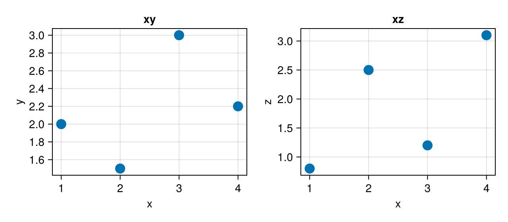
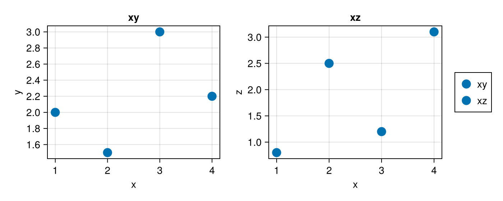

Linked views
Masque does not wire plots together itself; Pluto does. A click in a Masque widget becomes the value of a @bind variable, and every cell that reads that variable re-runs. So "linking" a scatter to a detail plot, a table, or a model fit is ordinary Pluto code: read pick, draw or compute something from it. This page shows that pattern first, then what one widget can do across several axes on its own.
Drive a second plot from a click
Put a key in each payload that identifies the row — an id, a name — and use it downstream. Here a map of cities drives a plot of the clicked city's series:
begin
cities = [
(id = "tok", name = "Tokyo", lon = 139.7, lat = 35.7),
(id = "del", name = "Delhi", lon = 77.2, lat = 28.6),
(id = "sha", name = "Shanghai", lon = 121.5, lat = 31.2),
]
series = Dict(
"tok" => [3.1, 3.4, 3.2, 3.6],
"del" => [2.2, 2.5, 2.9, 3.0],
"sha" => [2.0, 2.4, 2.3, 2.7],
)
fig = Figure(size = (560, 320))
ax = Axis(fig[1, 1]; xlabel = "longitude", ylabel = "latitude")
s = scatter!(ax, [c.lon for c in cities], [c.lat for c in cities]; markersize = 16)
pts = PointInteractable(ax, s; payloads = cities)
nothing
end@bind pick masque(fig, pts)begin
detail = Figure(size = (560, 240))
dax = Axis(detail[1, 1]; title = pick === nothing ? "click a city" : pick.name)
pick === nothing || lines!(dax, series[pick.id])
detail
endThe detail cell reads pick, so it re-runs on each click. The same pick.id could filter a DataFrame, pick the data for a fit, or be passed to another Masque widget — the second figure can be interactive too. Hovering never re-runs these cells; only clicks and releases do.
To show the clicked point as selected in a second widget as well, pass it as that widget's selected=; Selection round-trip shows it.
Several axes in one figure
One masque call covers every axis in a figure, and each axis keeps its own hits: hovering a point highlights that point on the panel you are on. Each scatter becomes its own layer (:scatter, :scatter_2, …), so pick.layer says which panel was clicked.
Notebook as text
Hold the pointer over a point. The highlight stays on the panel you are on.
Draw both scatters in one figure, the way you already would. One masque call covers both axes.
begin
xs = [1.0, 2.0, 3.0, 4.0]
ys = [2.0, 1.5, 3.0, 2.2]
zs = [0.8, 2.5, 1.2, 3.1]
fig = Figure(size = (640, 280))
ax_xy = Axis(fig[1, 1]; xlabel = "x", ylabel = "y", title = "xy")
ax_xz = Axis(fig[1, 2]; xlabel = "x", ylabel = "z", title = "xz")
scatter!(ax_xy, xs, ys; markersize = 18)
scatter!(ax_xz, xs, zs; markersize = 18)
nothing
endHover stays on the figure. A click can still land in pick in your own notebook; this page does not re-run a readout.
@bind pick masque(fig)
Masque does not assume that the same index in two plots is the same observation, so hovering point 3 in one panel does not highlight point 3 in the other. When they are the same row, make the connection explicitly: on a click, rebuild the figure with both layers selected,
masque(fig; selected = Dict(:scatter => [i], :scatter_2 => [i]))where i comes from a cell that does not read this widget's own value. With one index on each of two layers the widget highlights both but starts with its value at nothing, so a cell reading this widget's pick goes back to its "nothing clicked" state after the rebuild.
Highlight a series across panels
A legend entry is the one thing that highlights across axes by itself: hovering it lights up every mark of the series it names, on whatever axis the series is drawn. Clicking it returns the legend entry, which a downstream cell can use to filter (see Legend).
Notebook as text
Hold the pointer over a legend entry. Every point in that series highlights, on both axes.
Label each scatter and put them in one Legend. masque links the entry to the series it names.
begin
xs = [1.0, 2.0, 3.0, 4.0]
ys = [2.0, 1.5, 3.0, 2.2]
zs = [0.8, 2.5, 1.2, 3.1]
fig = Figure(size = (700, 280))
ax_xy = Axis(fig[1, 1]; xlabel = "x", ylabel = "y", title = "xy")
ax_xz = Axis(fig[1, 2]; xlabel = "x", ylabel = "z", title = "xz")
p_xy = scatter!(ax_xy, xs, ys; label = "xy", markersize = 18)
p_xz = scatter!(ax_xz, xs, zs; label = "xz", markersize = 18)
Legend(fig[1, 3], [p_xy, p_xz], ["xy", "xz"])
nothing
endHover paints the series. This page does not re-run a readout.
@bind pick masque(fig)
Filter a table from a region
Brushing is the many-marks version of a click: an ROIInteractable with selects returns every point inside the box on release, and a cell slices your table with it — df[picks, :]. Brush a region walks through it.
What Masque does not link for you
- Hover is local to the mark under the pointer; it does not echo into other plots.
- There is no shared data source between widgets. Two
masquecalls are two independent widgets, connected only through the Pluto cells you write. - Every box with
selectsin one widget must name the same layer, and boxes are rectangles: there is no lasso and no cross-filtering between brushes on different plots.
For how hover, clicks, and drags reach Julia, see Concepts.